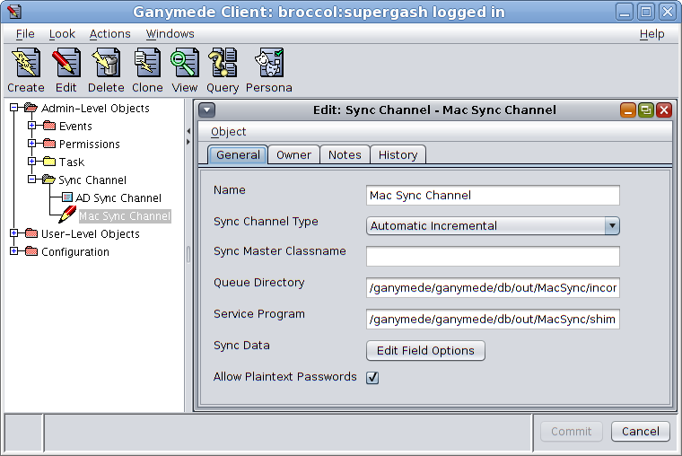
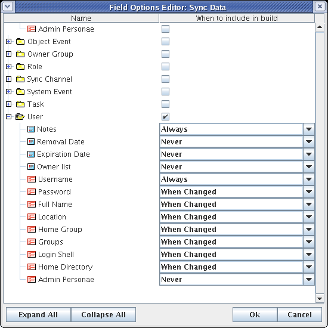
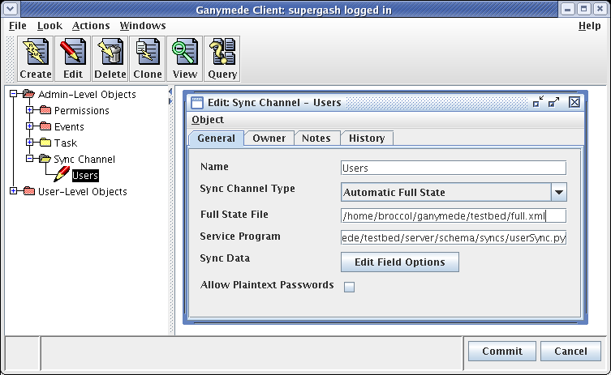
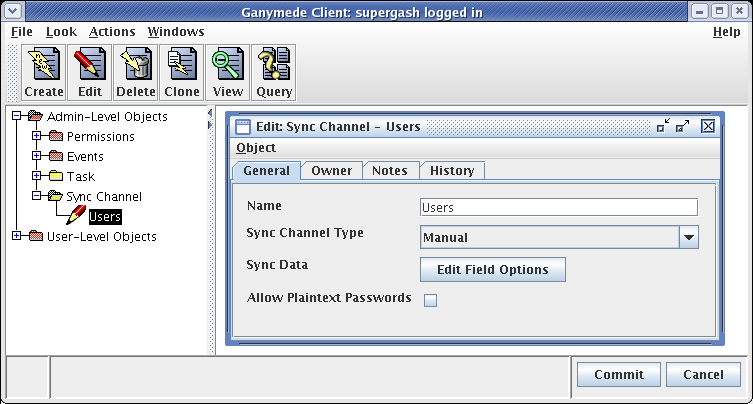

1. Approaches to Synchronization
Ganymede is designed around a transactional model, in which a
set of changes that transition the Ganymede server from one
consistent state to another is processed as a single unit of work.
As such, the transaction is both the minimum unit of change for
Ganymede and the trigger that causes the Ganymede server to
synchronize its data to target directory services.
Given this, there are in principle two ways that Ganymede might
handle synchronizing data to the services that it feeds:
- Dump out everything it knows relevant to the
synchronization and arrange for that 'full state' information
to completely replace the previous state of the external
managed services.
- Just send out relevant information that has changed since
the last synchronization.
Directory services like NIS and DNS have traditionally required
a 'full state' build system, as those services originally provided
no mechanism for applying incremental changes to their
configuration. Modern directory services like LDAP, on the other
hand, explicitly support incremental change commands. Applying
changes to these kinds of directories works most efficiently when
a small list of recent changes ("deltas") can be provided.
These two synchronization styles each have their own strengths
and weaknesses.
Full State Synchronization
With a full state synchronization, it really doesn't matter
whether any previous synchronizations were successful or not,
because each synchronization will contain a complete description
of the desired configuration for the target service. This means
that missing a synchronization (perhaps because the target
directory service is temporarily unavailable) is no problem. The
target directory will just catch up the next time a
synchronization occurs. The inherent redundancy of this approach
can make the synchronization process very robust, but the downside
is that a full state synchronization can be very time
consuming.
In addition, if it isn't possible to efficiently wipe and
reload the target directory service, a process of comparison must
be undertaken to calculate what has changed between the data
written out for the synchronization and the pre-existing
configuration of the target directory service. In some cases it
may not even be possible to read the pre-existing data from the
target directory service in order to be able to detect what has
changed. This is the case of ntPassword
in Active Directory, for instance, which is a write-only field.
Not being able properly to compare the full state data with the
contents of the target service may mean that more changes will
have to be sent to the target than would be necessary with a true
incremental synchronization.
Incremental Synchronization
Synchronizing only the recently applied transactions can be far
more efficient, assuming the target directory service can accept
and apply a set of changes. Only a very small amount of data may
need to be synchronized at each synchronization, and it's not
necessary for the target directory service to erase or reload
anything other than what actually changed.
This kind of "delta" synchronization, however, has some severe
shortcomings. The first problem is that if we are only sending
the most recent transactions, we must absolutely rely on the
target directory service to remember all previous changes. If a
transaction were to get lost somehow, the target directory service
would become out of sync with the master data held in Ganymede,
and later synchronizations might never detect or fix the problem.
Another problem is that if we limit the amount of data we send
to the synchronization channel to only that which recently
changed, we might fail to provide enough surrounding context to
allow the synchronization system to translate the synchronization
data into a form suitable to the target directory service. It
wouldn't do, for example, to try and write to a synchronization
channel the fact that a user's password changed without also
including enough surrounding context to allow the synchronization
system to locate the user record to be changed in the target
service.
Ganymede supports both full state and incremental
synchronization to target data services. Which of the two
you'll want to use will depend on the type of directory service
you're wanting to synchronize to, the size of your data set, the
frequency with which it will change, and the confidence you have
as to how reliable your target directory service is. The more
reliable your target directory service, the larger your data
set, and the more frequent your synchronizations, the more an
incremental style may be appropriate for you.
Contrariwise, if your target directory service is not
reliable enough to always retain changes that are passed to it
from Ganymede (either because the target service lost data or
because individual changes were refused due to tight or even
unpredictable integrity constraints on the target service), you
may want to stick with a slower but more redundant full state
synchronization approach.
2. Ganymede Synchronization
Whether incremental or full state, all Ganymede synchronization
is organized around a two step process. In the first step, the
Ganymede server writes files containing synchronization data. In
the second step, an external, free-standing program is run to read
in these data files and do whatever may be required to transmit
the synchronization information to target services. This division
of labor between the Ganymede server and your external code allows
for a great degree of flexibility in implementing the
synchronization logic, without requiring extensive code
development and maintenance within the Ganymede server itself.
Originally, implementing the first step of this process
required subclassing the arlut.csd.ganymede.server.GanymedeBuilderTask
class in the Ganymede server and writing custom Java code to scan
the portions of the Ganymede data store relevant to a specific
synchronization task and to write out custom-formatted data files.
This approach required the adopter to get intimately familiar with
the complex internal Ganymede DBStore
APIs for examining data in the Ganymede server. Not an easy thing
to do (or to document), and the necessity of recompiling Java code
and stopping and restarting the Ganymede server made things more
difficult.
We still support (and ourselves rely on) the
GanymedeBuilderTask synchronization infrastructure, but we don't
want to emphasize its use for new adopters of Ganymede. If you're
interested in reading about the advantages of the older sync
model, please consult the GanymedeBuilderTask
Synchronization Guide for details.
With Ganymede 2.0, we introduce a new synchronization
infrastructure built around a new Ganymede construct, the Sync Channel. Sync Channel synchronization
allows you to configure synchronization in the Ganymede server
using nothing but the Ganymede GUI client and/or the Ganymede xmlclient. Sync Channels don't
require you to write any Java code.. once configured, the first
step of synchronization (writing out data files) is handled
automatically by the Ganymede server using a standardized XML file
format.
3. Sync Channels
A Sync Channel is a type of object in
the Ganymede data store. You create and edit them in order to
configure XML-based synchronization channels in the Ganymede
server.
Sync Channels come in three flavors, according to the style of
synchronization they are configured to support:
- Automatic Full State
- Automatic Incremental
- Manual
Automatic Full State sync channels
represent automatically scheduled, full state builds. A full
state sync channel causes the Ganymede server to schedule a
synchronization as soon as possible after a transaction is
committed. When a synchronization is run, the Ganymede server's
data store is locked against commits while a full-state XML file
is written. After the file is written, the data store is unlocked
and the external build process is run on the full-state XML
file.
Automatic Incremental sync channels
represent automatically scheduled, transaction-by-transaction
incremental builds. With this sort of sync channel, transactional
information is written out as an integral part of the transaction
commit process. Each transaction committed to the Ganymede data
store causes an XML file to be written which contains the before
and after state of all objects that were modified during the
transaction and which the sync channel is configured to care
about. As soon as possible after a transaction is committed, an
external build process is run which processes all unprocessed XML
transaction files in commit order.
Manual sync channels are never
scheduled. The only purpose of a manual sync channel is to
represent a named set of object and field types to be dumped when
the xmlclient -dumpdata command is given with the sync=channel option. The output produced
by the xmlclient -dumpdata
sync=channel command is identical to that generated by an
equivalently configured automatic full state sync channel.
More on this anon.
A Sync Channel object looks like
this:

and has the following fields:
Name -- The unique name for this
Sync Channel.Sync Channel Type -- Your choice
among 'Manual', 'Automatic Full State', and 'Automatic
Incremental'.Queue Directory -- Path to the
directory that the Ganymede server will write incremental
synchronization files into. Only meaningful in incremental Sync
Channels.Full State File -- Fully specified
path to the file to which that the Ganymede server will write
full state synchronization files. Only meaningful in full state
Sync Channels.Service Program -- Path to the
executable external program that will process the
synchronization files. Meaningful for both incremental and full
state Sync Channels.Sync Data -- Aggregate field that
contains a map of object and field types to the conditions under
which they are (or are not) to be written to this Sync Channel.
By editing this field, you control what types of objects and
what fields thereunder will be written to this sync channel, and
under what circumstances.-
Allow Plaintext Passwords --
Check-box controlling whether or not password plaintext is
allowed to be written to this Sync Channel.
If this check-box is not selected, the Ganymede server will
still permit stored password hashes to be written to the Sync
Channel, but plaintext will be disallowed. You might want to
restrict plaintext passwords if you know that your Service
Program doesn't need access to the plain text in order to
synchronize passwords.
See the <password> element
guide for more details on password hashing vs. plaintext.
The Sync Data Field
You configure the data that will be synchronized to the Sync
Channel by editing the Sync Data field
with the Ganymede client. For each type of object defined on your
Ganymede server, you will see a check-box that lets you choose
whether or not that kind of object should ever be synchronized to
the Sync Channel.
If you open up the folder for a given object type, you will be
able to select three options for every field: Never,
When Changed, and Always.
These three options control whether or not that field should be
written and/or considered when deciding whether to write an object
to the Sync Channel. The interpretation of these fields is
slightly different in the incremental and full state cases, as
follows:
| Option | Manual / Full State | Incremental |
|---|
| Never |
This field will never be written. |
This field will never be written and it will never be
considered when determining whether an object in a
transaction should be written to the Sync Channel. |
| When Changed |
This field will be written. |
This field be written only if it changed during the
transaction. If this field is changed during a transaction,
the object as a whole will be written to the Sync Channel at
commit time. |
| Always |
This field will be written. |
This field be written if any field in the object marked
'When Changed' or 'Always' was changed during the
transaction. If this field is changed during a transaction,
the object as a whole will be written to the Sync Channel at
commit time. |
The purpose of the Always option is intended to allow
you to mark fields whose data must always be included when an
object of that type is written to the Sync Channel. If your
service program will always need to know the contents of a user
object's Username field every time the
object is changed (even if the Username itself did not change),
you can configure your Sync Channel's Sync
Data to always include it with the Always
option.
For Full State and Manual Sync Channels, Always and
When Changed are synonyms. The difference between the two
is only significant for Incremental Sync channels, where a When
Changed field will only be written to a transaction record if
it changed during the transaction.
Here's an example of what you might see when you edit a Sync Data field in a Sync
Channel object:

4. Full State Sync Channels
Full State Sync Channels are Ganymede 2.0's XML-based answer to
the traditional Ganymede 1.0 GanymedeBuilderTask build system.
When a transaction is committed in Ganymede, the server
examines every Full State Sync Channel registered in the server
and determines whether the committed transaction contained any
objects and fields that match up against the Sync Channel's Sync Data field. If so, as soon thereafter
as the GanymedeScheduler can manage (that is, as soon as any
previous build on the Sync Channel has finished), a
synchronization to the Sync Channel will be performed.
As we have discussed, this synchronization is a two phase
process. The server executes a SyncRunner
object associated with the Sync Channel, which locks the database
against commits and writes out everything in the Ganymede Server
which matches the Sync Channel's Sync
Data constraints to the defined Full
State File. When the file is finished being written out,
the database is unlocked to allow commits to take place and the
Sync Channel's external Service Program
is run to process the synchronization data.
Here's what a Full State Sync Channel looks like:

Writing a Sync Channel Full State Service Program
The Sync Channel Full State Service Program is tasked with
taking an XML file written by the Ganymede server which contains
all objects and fields in the server which match an Always
or When Changed specification in the Sync Channel's Sync Data field. The Service Program must
read this file and then take whatever actions are required to
bring the external target service into congruence with the data in
the XML file.
We don't know what sort of external target service you may find
yourself wanting to support with a Full State Sync Channel, but we
can guess at the sort of things your Service Program may need to
do. Creating records, deleting records, editing records, and
possibly renaming or moving records. Implementing the logic to
interact with any given external service is necessarily a custom
job, according to how unique the external service you're trying to
support is.
It's very simple to say what the Ganymede server will give your
Service Program to help it along:
Almost nothing.
Because of practical limitations on how well Java code can
interact with the native operating system environment (UNIX-style
systems, typically, for Ganymede), the Ganymede server doesn't try
to set up any environment variables for your program. It doesn't
even try to ensure that your program is started in any specific
working directory. It certainly doesn't try to do any logging for
your Service Program in any way.
What it does give the Service Program is a single command line
parameter, which provides the file path to the XML file written
out by the Sync Channel's SyncRunner.
The Service Program should start off by changing its working
directory to a suitable location, setting any environment
variables necessary (PATH or LD_LIBRARY_PATH included), and
arranging for its own logging to the appropriate log mechanism.
Once all that is done, it should read in the XML file and start
to work.
Here's a quick summary of things you should know when creating
your Full State Service Program:
- The Ganymede server will not write to your service program's
standard input stream.
- Anything your service program writes to its standard output or
error streams will be completely ignored by Ganymede, and lost.
You are responsible for making your service program log any error
conditions to something other than standard error.
- Your service program should expect a single command line
argument from Ganymede, that being the path to the full state XML
file to be processed.
- Your service program should not expect to have any useful environment
variables set by Ganymede.
- Your service program should not expect to have its current
working directory set to anything useful or meaningful by
Ganymede.
- Your service program should not terminate until the
synchronization process is truly finished, and it is safe for the
Ganymede server to begin a new external synchronization.
That last point is critical to ensuring that the Ganymede
server will not try and schedule multiple overlapping external
builds. Ganymede will wait for your service program to complete
before processing the next full state synchronization to your Sync
Channel. This is what you want, so don't confuse the Ganymede
server by having your service program try and run things in the
background.
Here's an example of the sort of XML file that the Full State
Service Program must be prepared to process:
<ganymede major="1" minor="0">
<ganydata>
<object type="User" id="jonabbey" oid="3:1143">
<Username>jonabbey</Username>
<UID>6074</UID>
<Password><password plaintext="S00perSekret" crypt="zv16nogZ9eRP5" md5crypt="$1$bH3vxykP$dkmWhIdVuqC8Y1h0s7PQU1" lanman="8AF317306D28CA711D0DC6E\
72A9441BB" ntmd4="D3A6370C044FD34C6A487A6F5F53A6C1" ssha="{SSHA}cdHEG7iIMT2ZSHkJEf4fR62v/b23rnMO"/></Password>
<Account_Category><invid type="User_Category" id="normal" oid="279:5"/></Account_Category>
<Full_Name>Jonathan Abbey</Full_Name>
<Badge>x819</Badge>
<Division>ITS</Division>
<Room>S321</Room>
<Office_Phone>835-3199</Office_Phone>
<Groups>
<invid type="Group" id="omssys" oid="257:245"/>
<invid type="Group" id="csdweb" oid="257:114"/>
<invid type="Group" id="omrgen" oid="257:264"/>
</Groups>
<Home_Group><invid type="Group" id="omssys" oid="257:245"/></Home_Group>
<Login_Shell>/bin/tcsh</Login_Shell>
<Home_Directory>/home/jonabbey</Home_Directory>
<Directory_Volume>
<object type="Embedded_Automounter_Map_Entry" id="jonabbey/auto.home.default" oid="278:1257">
<Automounter_Map><invid type="Automounter_Map" id="auto.home.default" oid="277:2"/></Automounter_Map>
<NFS_Volume><invid type="NFS_Volume" id="omg2" oid="276:636"/></NFS_Volume>
</object>
</Directory_Volume>
<Email_Aliases>
<string val="abbey"/>
</Email_Aliases>
<Signature_Alias>jonabbey</Signature_Alias>
<Email_target>
<string val="jonabbey@arlmail.arlut.utexas.edu"/>
</Email_target>
</object>
</ganydata>
</ganymede>
Some of the details of the XML schema used are dependent on the
specific Ganymede schema in on the Ganymede server. In
particular, the names of the field elements (and what sorts of
data the field elements contain) are up to you when you define the
Ganymede schema.
Because whitespace is not allowed in element names, the field
names you'll see in the XML file are processed with a simple spaces to underscores encoding
to make sure that field names cohere with proper XML specs.
This format is basically identical to the output of an xmlclient data object dump, as
documented in the Ganymede XML
<ganydata> Guide.
The only differences are that:
- The <invid>
elements have an extra oid attribute (more on which when
we talk about the Incremental Sync Channel).
- The data that is dumped is filtered by the Sync Data constraints specified in the
Sync Channel.
5. Incremental Sync Channels
The general structure and timing of the Incremental Sync
Channel system is both similar to and different from the Full
State Sync Channel model. Like the Full State Sync Channel model,
synchronization is a two phase process. In the first phase,
synchronization data is written out using a standard XML file
format that is generated for you by the Ganymede server. In the
second phase, an external service program is executed to process
synchronization data in the XML output.
The Incremental Sync Channel differs from the Full State Sync
Channel in when the data is written out, and what that data looks
like.
In the Sync Channel Incremental model, the first step of
writing out the synchronization data is done as an integral part
of with the transaction commit process. A transaction is not
considered persistently committed unless and until all Incremental
Sync Channels have successfully written out XML files describing
everything that happened in the transaction relevant to the
individual Sync Channel.
The second step is scheduled for asynchronous execution with
the Ganymede Scheduler at some later point in time. Usually, this
is carried out almost immediately after a transaction is
committed. But if the Sync Channel is still working on a previous
execution of the Service Program, the external process for step
two will be delayed until the previous run is finished.
At no point is the Ganymede server's database locked to prevent
transaction commits. This is very important for performance,
because it means that no one has to wait for an Incremental Sync
Channel's external service program to complete before committing
additional changes to the Ganymede server.
And if transactions are being committed, that means
transactions are being written to the Incremental Sync
Channels.
To deal with this, Incremental Sync Channels are designed to
function as message queues. Transactions are written to the Queue
Directory in order as they are committed. When the external
service program is run, the XML files are read and processed in
the same order. As each XML file is processed, a delta is
calculated and sent to the target service.
This gives us the efficiency (and the downsides) inherent to
the incremental synchronization model discussed above.
Configuring Incremental Sync Channels
All that you need to do to configure an incremental Sync
Channel in Ganymede is to create an Automatic Incremental
Sync Channel object in the Ganymede
server.
An incremental Sync Channel object
looks like this:
What The Sync Channel Incremental Model Writes Out
The Ganymede server writes one XML file to the Sync Channel
synchronization directory for each relevant transaction that is
committed to the Ganymede server. Each transaction is given a
simple integer filename, unadorned with any filename extension.
The Ganymede server maintains a transaction count for every
transaction committed after the Ganymede server is initialized,
the first transaction committed being transaction zero.
Each file that is written out looks like this:
<transaction major_version="1" minor_version="1" channel="Users" user="supergash" number="18" time="1111015745225">
<object_delta>
<before>
<object type="User" id="barkerr" oid="3:1175">
<Username>barkerr</Username>
<Signature_Alias>barkerr</Signature_Alias>
</object>
</before>
<after>
<object type="User" id="freeman" oid="3:1175">
<Username>freeman</Username>
<Signature_Alias>freeman</Signature_Alias>
</object>
</after>
</object_delta>
</transaction>
The attributes in the <transaction> element are as follows:
| Attribute | Value |
|---|
| major_version | A major version number
for the Ganymede Sync Channel transaction format. |
| minor_version | A minor version number
for the Ganymede Sync Channel transaction format. |
| channel | The name of the Sync Channel
that generated this XML file. |
| user | The name of the Ganymede user or
admin that committed this transaction. |
| number | Unique number for this
transaction, the number of transactions committed by this
Ganymede server prior to this one. Also the filename of this
file. |
| time | Java time code marking the time
this transaction was written. Interpreted as the number of
milliseconds since Midnight, January 1, 1970 UTC. |
The <transaction> element contains a series of one
or more <object_delta> elements. Each
<object_delta> element contains a
<before> element and an <after>
element.
The <before> and <after> elements may
contain one <object> element each. These
<object> elements are identical to the <object> elements as they
are used with the xmlclient, except that the
oid attribute has been added. The
oid attribute may be useful to your
Sync Channel service program as a foreign key that does not change
between the <before> and <after>
elements, even if the object is renamed in the transaction.
<invid>
elements also have oid attributes.
Any cross-referencing you need to do in your service program you
should do with these oids.
The other big difference with the <object> elements in
the Sync Channel XML output is that they will only include the
fields that the Sync Channel was
configured to write. This is where our friends Always and
When Changed come into play.
There is yet a third difference, having to do with
how embedded objects are handled. In xmlclient's normal output,
embedded objects are embedded in place, while in Sync Channel
output, embedded object trees are simply represented as flat lists
of <invid>
elements. This is pretty obscure, but if you're dealing with
embedded objects in your Ganymede schema, you'll see what we
mean.
If a field did change during the transaction, its before state
will be written in the <before> element, and its
after state will be written in the <after> element.
If a field was newly created during the transaction, the field
will not appear in the <before> element but it will
appear in the <after> element. Likewise, if a field
was deleted during the transaction, it will appear in the
<before> element but not in the <after>
element.
If an object is created or destroyed in a transaction rather
than merely edited, the <before> or
<after> elements, respectively, will be empty.
Here's an example of a user in the laboratory's Ganymede server
being deleted by the expiration task:
<transaction major_version="1" minor_version="1" channel="Users" user="expiration" number="21" time="1111730401435">
<object_delta>
<before>
<object type="User" id="raghu" oid="3:1657">
<Username>raghu</Username>
<UID>3025</UID>
<Global_UID>11f3a6c0-a9cd-11d8-b6ba-080020fd6b07</Global_UID>
<Account_Category><invid type="User_Category" id="normal" oid="279:5"/></Account_Category>
<Full_Name>Raj Raghu</Full_Name>
<Badge>5917</Badge>
<Division>ASD</Division>
<Room>N347</Room>
<Office_Phone>3872</Office_Phone>
<Groups>
<invid type="Group" id="asrmas" oid="257:143"/>
<invid type="Group" id="omssys" oid="257:851"/>
</Groups>
<Home_Group><invid type="Group" id="asrmas" oid="257:143"/></Home_Group>
<Login_Shell>/bin/bash</Login_Shell>
<Home_Directory>/home/raghu</Home_Directory>
<Directory_Volume>
<invid type="Embedded_Automounter_Map_Entry" id="Embedded Automounter Map Entry[1810]" oid="278:1810"/>
</Directory_Volume>
<Signature_Alias>raghu</Signature_Alias>
<Email_target>
<string val="raghu@arlmail.arlut.utexas.edu"/>
</Email_target>
<Password_Expiration><date val="Tue, 08 Mar 2005 00:00:01" timecode="1110261601003"/></Password_Expiration>
<Owner_list>
<invid type="Owner_Group" id="ATL" oid="0:9"/>
</Owner_list>
</object>
</before>
<after/>
</object_delta>
</transaction>
Notice that all fields that were contained in the object prior
to the transaction commit and which match the Sync Data constraints are included in the
before state, while the after state is empty. This is an
ex-user.
Writing a Sync Channel Incremental Service Program
Writing a Service Program for use with the Sync Channel
Incremental Mode is generally rather more complicated than writing an external sync
script for use with a Full State Service Program. In addition
to parsing and processing the XML written out by the Ganymede
server, your Service Program has to be able to cooperate with the
Ganymede server in carrying out the message queuing protocol for
the Incremental Sync Channel.
Here are the rules for an Incremental Sync Channel Service
Program:
- As with the Full State Service Program external sync
scripts, your Service Program is on its own with regard to
setting up environment variables, working directory,
logging/output streams, and locating files. Of particular note,
your Service Program must know how to find its Queue Directory
with no hints from the Ganymede server at runtime.
- The Ganymede server will run your Service Program with a
single command line argument. This will be the highest
transaction number your Service Program is allowed to process
during this run. Any transactions with higher numbers that your
Service Program may come across in the Sync Channel Queue
Directory are not safe to operate on, as they may not be fully
written or committed. Even if they are fully written, they may
later be withdrawn if the server runs into an I/O problem while
writing XML to other configured Sync Channel Queue Directories.
Never, ever trust a transaction with a higher number than you
are given on the command line. Don't read them, don't look at
them, just don't do it.
- Your Service Program is required to process transactions in
increasing numeric order. Be careful to use a numeric sort and
not a textual sort when ordering your processing.
- Your Service Program must process transactions. This
involves reading an XML transaction file from the Queue
Directory, parsing and interpreting the XML record in terms of
the Ganymede server schema, and performing the appropriate
action on the target directory service to make the equivalent
changes in the target service's schema.
- Your Service Program is responsible for removing
successfully processed transactions from the Queue Directory.
Your Service Program must only remove a transaction from the
Queue Directory when it is certain that the change has been
properly synchronized into the target service. You may wish to
move successfully committed transactions to another directory
for record keeping (and the possibility of playback in the event
of a rollback of your target service), or you may delete them
from the Queue Directory entirely. Your Service Program must
not leave processed transactions in the Queue Directory.
- It is conceivable that your Service Progam may be
interrupted or killed after it has completely processed a
transaction and before it has cleared the transaction from the
Queue Directory. You must attempt to deal with this situation
as cleanly as possible. Ideally, your Service Program should be
able to recognize that the target service is already compliant
with the after state of a given transaction. This should only
ever happen with the first transaction your Service Program, as
your Service Program should never start processing a transaction
before it has cleared the previous transaction from the Queue
Directory.
- If your Service Program encounters a transaction that it
cannot process due to a transient error, it must stop processing
transactions, and leave the failed transaction in the Queue
Directory for processing by a later attempt.
-
If your Service Program encounters a transaction that it
cannot process due to a data mismatch with the target service,
you must attempt to notify a human to take a look at the
problem. This may be through logging to a Service
Program-specific log, by writing to a syslog service, by
creating an SNMP trap, or by sending email. Or all of the
above, if you can. Your Service Program must process no
further transactions, and it must leave the problematic
transaction in the Queue Directory for human examination.
This class of error should ideally never occur, if your
Ganymede server schema and your Service Program and your
target service are all properly compatible.
- If you can determine with confidence that certain classes of
data mismatches are non-fatal and will not cause new problems to
arise with future transactions, you may record a non-fatal error
to your Service Program log, move the problematic transaction
aside for human examination, and continue processing
transactions. You should be extraordinarily certain about your
logic before doing this, however.
As you can see, writing an Incremental Sync Channel's Service
Program can be quite involved. To make it easier on you, we have
written a Python package, SyncUtils, which knows how to set up
logging, how to parse Ganymede XML transaction files, and how to
identify what objects and fields were created, edited, and
deleted. Writing synchronization code with SyncUtils is as easy
as writing a callback Python function that takes data from the
SyncUtils package and works with it from there.
6. The Sync Channel Manual Model
The Sync Channel Manual model is based on the Sync Channel Full State Model. Unlike
any other synchronization systems supported by the Ganymede server
the Sync Channel Manual model is not supported by the Ganymede
server as an automated build system.
Instead, the Sync Channel Manual model refers to the ability to
use the xmlclient to dump out
a subset of the Ganymede datastore, using a Sync Channel object to constrain the
object and field types dumped. The idea is that, after dumping
out your information using xmlclient, you use a variant of
the Sync Channel Full
State Service Program to synchronize the full state of your
Ganymede data with your target directory service.
The SyncUtils Python package that we have written knows how to
read a Ganymede full state and/or manual XML dump, and can support
you in doing manual full state synchronization.
To generate a Sync Channel manual dump, you can run:
xmlclient -dumpdata sync=Users > user_full_state.xml
The output of such a xmlclient -dumpdata command
is identical to that produced by the Sync Channel Full State Model, and can
be processed by any service program that is compatible with the
requirements of the Sync
Channel Full State Service Program.
Here is a screenshot of a Sync Channel configured for manual
operation:

Note, however, that you can do this xmlclient dump
trick with any Sync Channel that you have registered in your
Ganymede server. Actually configuring a Sync Channel as
Manual is strictly optional, and would generally only
be done when you know that you don't want the server ever to
automatically generate an incremental or full state build for you
using the Sync Channel.
8. Python Sync Utils
9. Active Directory Example
Jonathan Abbey
$Date$, $Rev$, $Author$